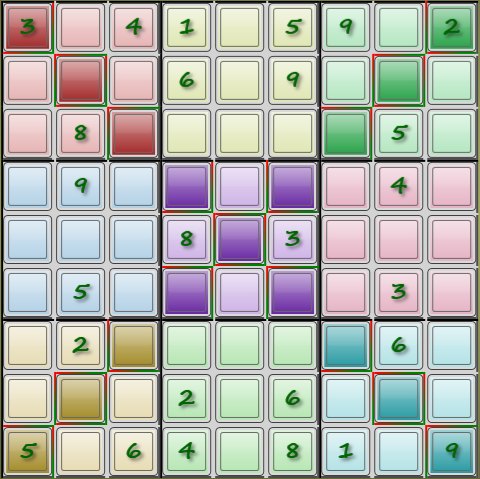
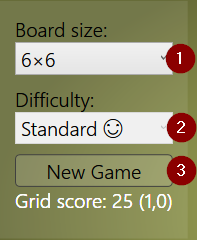
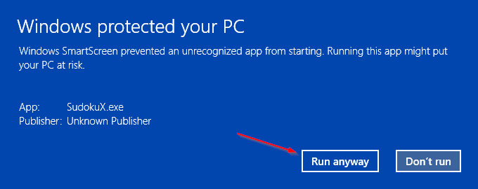

Na een tijd sudoku's te hebben opgelost, wilde ik zelf wel eens proberen zo'n programma te maken. Dit is het voorlopige resultaat.
Mijn sudoku programma
Het bekende doel van een sudoku puzzel
Zorg ervoor dat in elke rij, elke kolom en elk blok alle mogelijke cijfers (of tekens) precies éénmaal voorkomen.
Mogelijkheden
Naast de standaard 9×9 sudoku zijn er nog andere afmetingen mogelijk:
4×4
6×6
9×9
12×12
16×16
Groter dan dat wordt te onoverzichtelijk.
De 9×9 puzzel gebruikt cijfers (1-9). De kleinere puzzels kunnen symbolen gebruiken in plaats van cijfers (voor de variatie).
Voor de grotere puzzels zijn 10 cijfers niet genoeg, dus wordt doorgeteld in letters ("A", "B" etc). De exacte waarde maakt toch niet uit.
Maar naast afmetingen zijn er nog meer variaties mogelijk:
Regelmatig (rechthoekige blokken), de standaard
Onregelmatig (rijen en kolommen tellen normaal, maar de blokken zijn meestal niet rechthoekig. Let op de kleuren)
Met diagonaal: ook op de diagonalen moeten alle cijfers staan
"Hyper": er zijn extra blokken aangegeven (donkerder) waar ook alle cijfers in voor moeten komen
Een 6×6 grid met onregelmatige blokkenEen 9×9 grid met extra diagonalen

Een 9×9 grid met hyper blokken
Spelen
Nieuw spel starten
Om een nieuw spel te starten:
Selecteer eerst het gewenste type bord (of laat staan, als dit al goed staat)
Het is de bedoeling dat er nog extra keuzes voor moeilijkheidsgraad bij komen.
Klik dan op "Start nieuw spel" en wacht tot de puzzel gegenereerd is
Oplossen maar !
Nieuw spel starten

Een getal plaatsen
Er zijn twee manieren om een een plek in de puzzel te voorzien van een nieuw getal:
Selecteer een getal in het getalblok rechtsboven en klik dan een of meer cellen aan waar dat getal ingezet moet worden
Selecteer eerst een cel (waarmee ook de bijbehorende rijen, kolommen en blokken gemarkeerd worden) en dan pas het getal dat er in moet
Er wordt gewaarschuwd als dit geplaatste getal in strijd is met eerder geplaatste getallen: de groepen met dubbele getallen worden rood gemarkeerd.
Een geplaatst getal verwijderen kan ook op twee manieren: plaats het getal nogmaals of gebruik de "leeg" knop (hieronder gemarkeerd met een 1).
Het getalblok
Toon mogelijkheden
Een nuttig hulpmiddel is het tonen van de getallen die nog op de open posities mogelijk zijn. Deze worden automatisch bijgehouden op basis van de geplaatste getallen.
Je kan ook zelf waarden verwijderen, als je hebt besloten dat die zeker niet kunnen. Er wordt geen melding gegeven als de conclusie niet klopt.
Deze optie is uitgeschakeld als de puzzel "te makkelijk" is.
aan/uitzetten
Toetsenbord bediening
Enkele functies zijn met het toetsenbord te selecteren, voor de rest is een muis noodzakelijk.
Tab: Schakel tussen "pen" en "potlood" (mits "toon mogelijkheden" is aangevinkt)
0…9, A…F: selecteer dat getal of die letter (voor zover van toepassing).
Backspace: de "herstel" functie.
Installeren
Voor de (Windows) installer, klik hier en gebruik de "launch" link of de "Install" knop. Voer het gedownloade bestand uit.
Dit is een "click once" installer, wat betekent dat bij het opstarten van het programma automatisch gecontroleerd wordt of er een nieuwe versie is.
Is dit het geval, dan wordt aangeboden die nieuwe versie te installeren.
SmartScreen meldingen
Let op: Op mijn Windows 8 PC krijg ik een ernstig klinkende "SmartScreen" melding, omdat het door mij geschreven programma niet in de Windows lijst van veilige programma's staat.
Zoals dit: SmartScreen melding op Windows 8
Klik hier niet op de "OK" knop (want dan wordt de installatie afgebroken), maar op de "more info" link (die in een nederlandstalig systeem vast wel "meer info" heet).
Dan wijzigt het scherm in SmartScreen na "more info"

Klik daar op de "Run anyway" knop ("Toch uitvoeren"?) om de installatie door te laten gaan.
Deze schermen komen niet alleen bij de eerste installatie, maar ook bij upgrades.